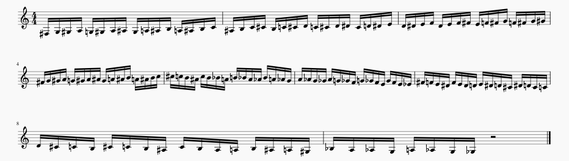

There are three fundamental jazz patterns:
Diatonic or within a scale
Chromatic
Arpeggiatic
To learn improvisation, I practice the infinite patterns that fall within these categories in all 12 keys.
For example:

I call this "Chromatic 16th Runs".
This micro-progresses and macro-progresses chromatically.
You can change this up by macro-progressing by minor 3rds, major 2nds, or even diatonically in and through all 12 keys.
Additionally, I practice transcribing and playing solos by ear.
Aside from these jazz techniques, I practice long tones and lip slurs.
One important note: rest just as much as you play so you can practice all through the day and not bust your chops.